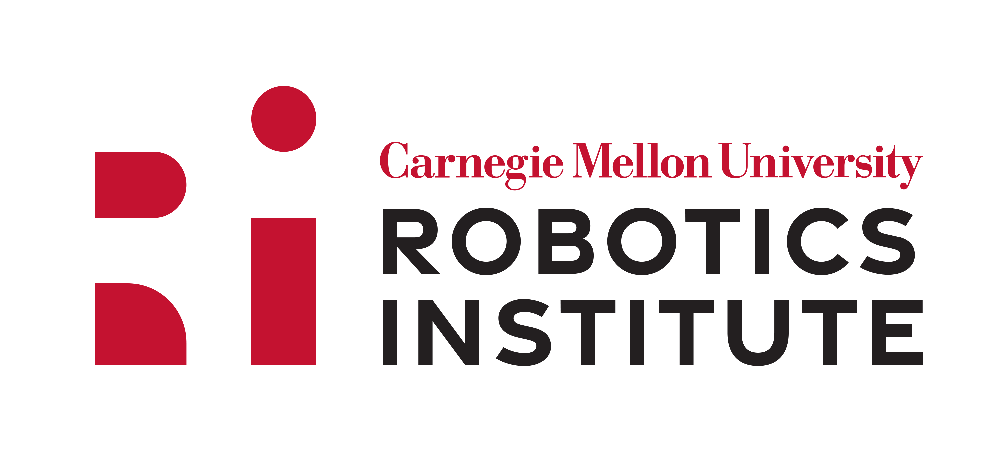
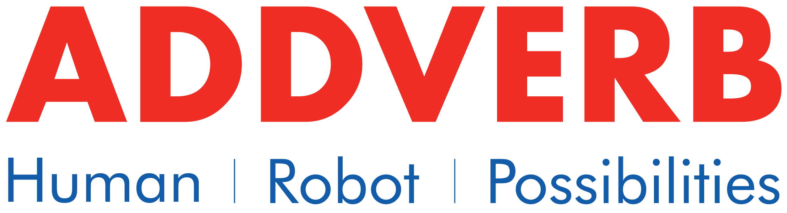
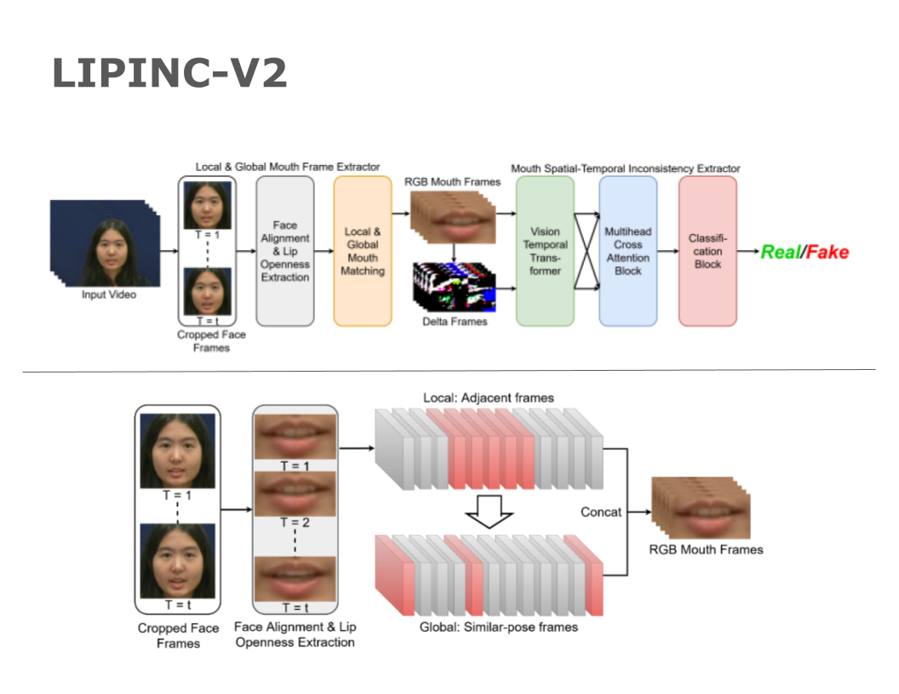
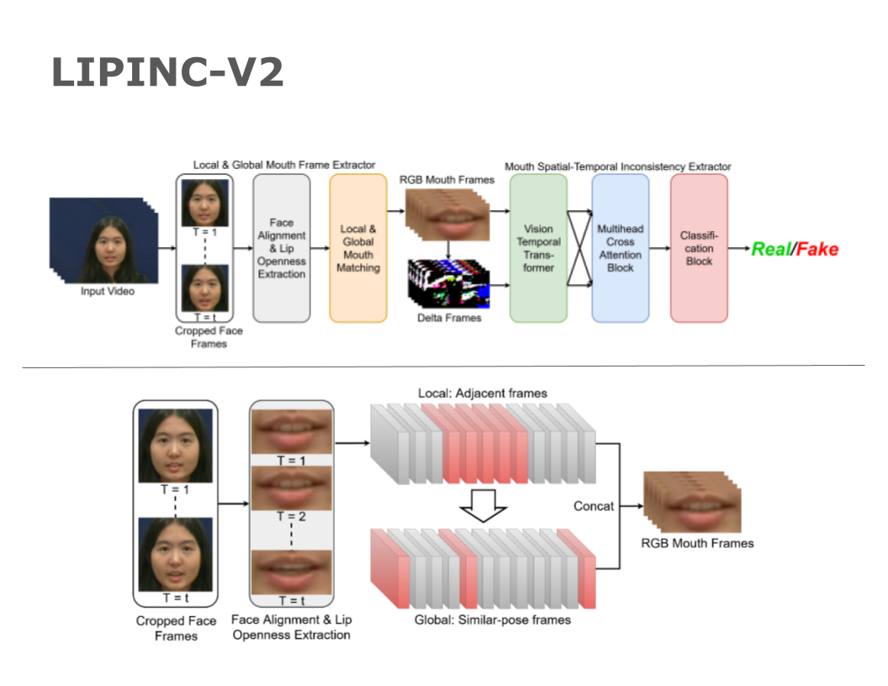
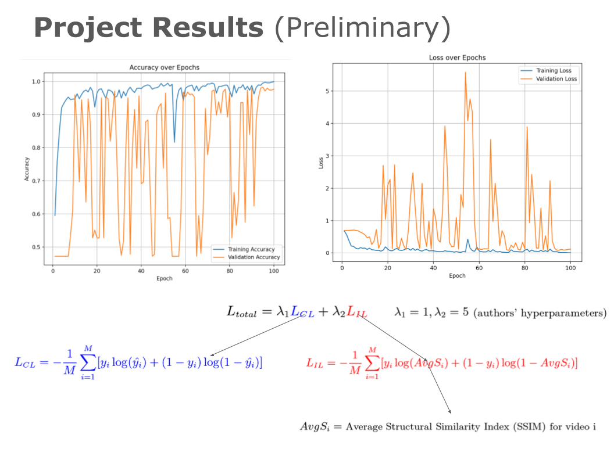
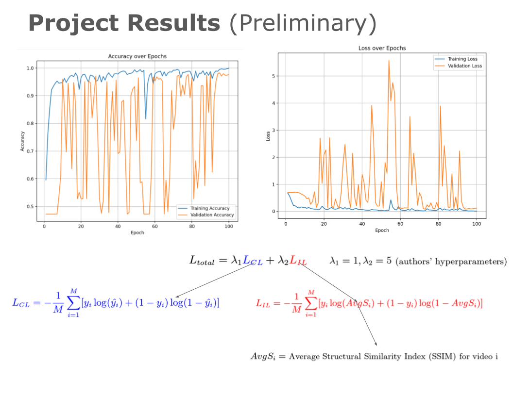
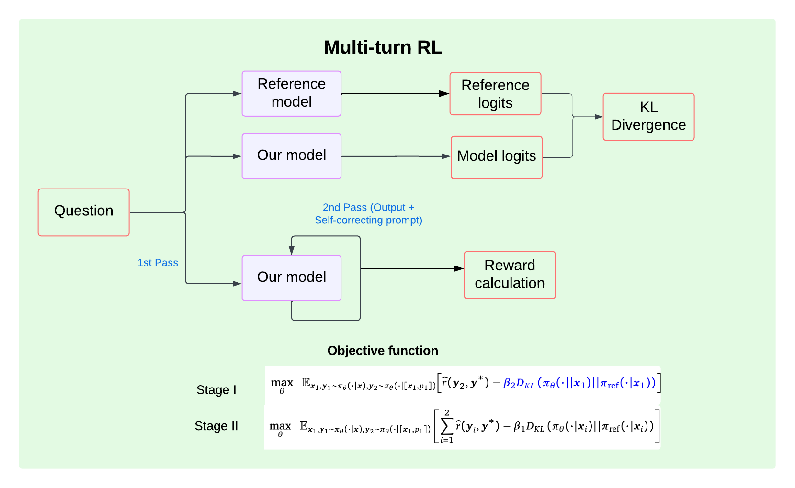
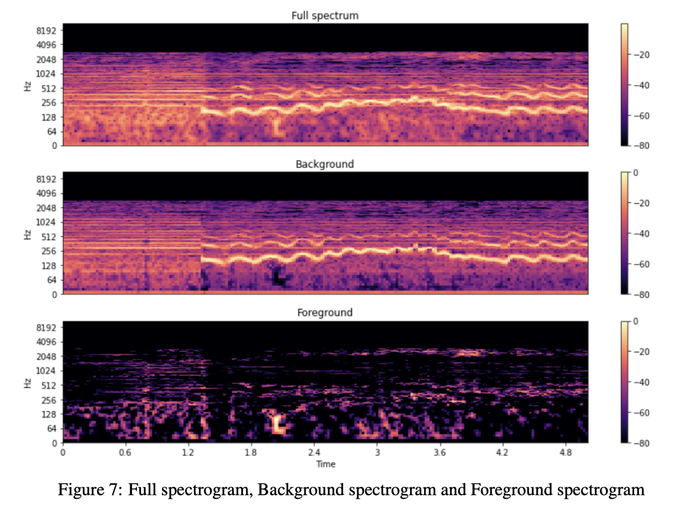

|
Ishita Gupta I'm a Master's student in Robotic Systems Development (MRSD) at Carnegie Mellon University, where I focus on robotics and deep learning. Previously, I worked as a Robotics Engineer at Addverb for 2.5 years, developing VSLAM systems, physics engine simulators, and multi-robot applications. I also interned at Google where I automated cloud infrastructure pipelines for the Nest Devices team. My research interests include humanoid robotics, visual SLAM, reinforcement learning, and autonomous systems. I'm passionate about developing intelligent robotic systems that can operate in dynamic, real-world environments. |

|
Education |
|  |
Carnegie Mellon University Master of Science in Robotic Systems Development (MRSD) CGPA: 3.83 | August 2024 - May 2026 Coursework: Deep Reinforcement Learning (10-703), Generative AI (10-623) Show more |
|
|
The LNM Institute of Information Technology (LNMIIT) Bachelor of Technology (B.Tech) in Computer Science and Engineering August 2018 - July 2022 Coursework: Artificial Intelligence, NLP, Advanced Algorithms Show more |
Industry Experience |
|
|
Nissan Advanced Technology Center - Silicon Valley (NATC-SV)
May 2025 - August 2025
Robotics Research Intern
|
|  |
Addverb
January 2022 - July 2024
Robotics Engineer
Advanced Robotics & Industrial Automation
|
|
|
Google Nest Devices Cloud
May 2021 - August 2021
Software Engineering Intern
|
Projects & Research |
|
|
Autonomous Humanoid Loco-Manipulation for Tote Logistics
CMU MRSD Capstone Project, 2024 - Present Advised by Prof. Guanya Shi In collaboration with Nissan and Field AI project page / code Developing an autonomous humanoid robot system integrating hybrid whole-body control, motion planning, and sensor fusion (RGBD & LiDAR) for precise tote manipulation and obstacle avoidance in dynamic warehouse environments. |
.png) 

.png)
.png)
.png)
.png) 

|
Detecting Lip-Syncing Deepfakes: Vision Temporal Transformer for Analyzing Mouth Inconsistencies
CMU GenAI Course Project, 2024 project report / code / poster Developed a Vision Temporal Transformer model to detect lip-syncing deepfakes by analyzing temporal inconsistencies in mouth movements. The model leverages attention mechanisms to capture both spatial and temporal relationships in video sequences, achieving improved accuracy in identifying synthetic media. |
|  |
Training Language Models to Self-Correct via Reinforcement Learning
CMU Course Project, 2024 project report / code Led benchmarking of self-correction in LLMs, evaluating performance across Llama 3.2 1B, Llama 3.1 8B, and Mathstral 7B on MATH dataset. Achieved accuracy rates of up to 41.8%, identifying high Cor->Inc rates (46.9%) and low Inc->Cor improvement (3.78%). Engineered a multi-turn reinforcement learning framework (SCoRe) for fine-tuning. |
|  |
Indian Classical Music Segmentation Using Machine Learning
LNMIIT B.Tech Project, 2021 - 2022 Advised by Prof. Dr. Sakthi Balan project page / code Developed an onset detection technique to isolate the Percussion Solo section in concert audio, applying clustering algorithms (K-means, DBSCAN) and leveraging Essentia and Librosa for audio processing. |
Teaching Experience |
|
Carnegie Mellon University Teaching Assistant - Introduction to Deep Learning (11-785) Spring 2025, Fall 2025 Course Website / YouTube Channel Responsibilities: • Lead recitation sections and office hours for 200+ students • Grade assignments and provide detailed feedback on deep learning projects • Assist in course development and curriculum refinement • Create educational content and recorded lectures for online learning |
|
cloned from here! |